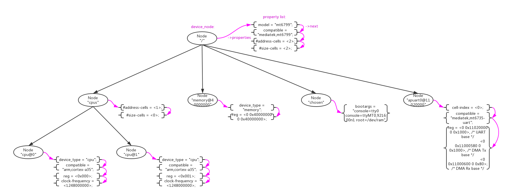
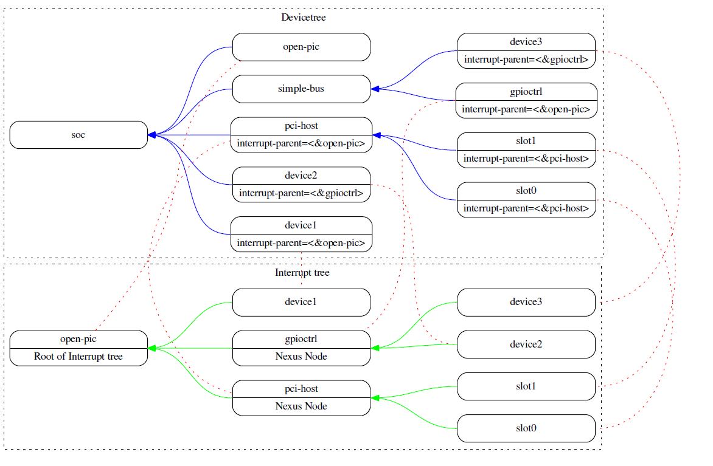
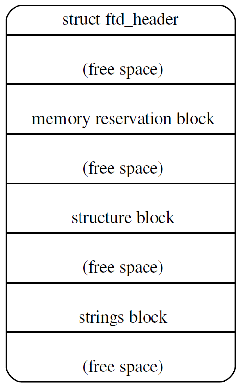
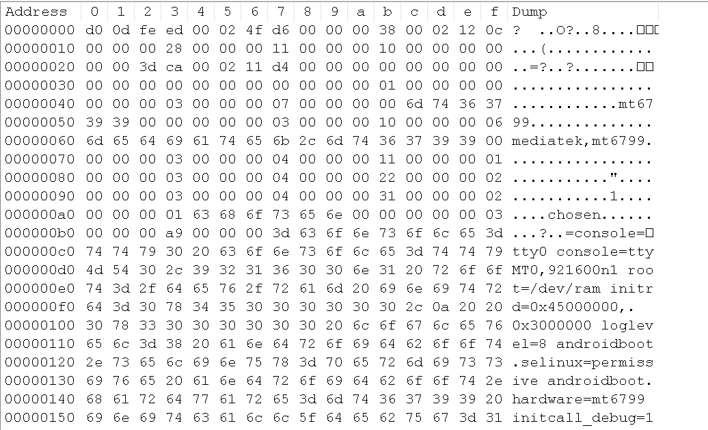

1、DTS语法
对于DeviceTree的来历和用处大部分人都已经非常了解了，DeviceTree发源于PowerPC架构，为了消除代码中冗余的各种device注册代码而产生的，现在已经成为了linux的通用机制。
DeviceTree的结构非常简单，由两种元素组成：Node(节点)、Property(属性)。下图是一个真实的简单的DeviceTree树形结构图。

- Node节点。在DTS中使用一对花括号”node-name{}”来定义;
- Property属性。在Node中使用”property-name=value”字符串来定义；
1 | / { |
上述例子中定义了一个根节点”/“和一个子节点“chosen”，其他的字符串“model = “mt6799”;”、“compatible = “mediatek,mt6799”;”都是property。
Node、Property的名字和值都是可以自定义的，没有太大限制。但是DeviceTree的标准还是预定义了一些标准的Node和Property，在标准Node和Property之间还定义了一些约束规则。关于这些描述在 The DeviceTree Specification官方spec中有详细描述。这里为了方便大家，还是重复做一些搬运。
1.1、标准Property
Property的格式为”property-name=value”，其中value的取值类型如下：
| Value | Description |
|---|---|
| <empty> |
Value is empty. Used for conveying true-false information, when the presence of
absence of the property itself is sufficiently descriptive. Property值为空，用property本身出现或者不出现来表示一个treue/false值。 |
| <u32> |
A 32-bit integer in big-endian format. Example: the 32-bit value 0x11223344 would be represented in memory as: address 11 address+1 22 address+2 33 address+3 44 32bit的值，用大端格式存储。 |
| <u64> |
Represents a 64-bit integer in big-endian format. Consists of two <u32> values where the first value contains the most significant bits of the integer and the second value contains the least significant bits. Example: the 64-bit value 0x1122334455667788 would be represented as two cells as: <0x11223344 0x55667788>. The value would be represented in memory as: address 11 address+1 22 address+2 33 address+3 44 address+4 55 address+5 66 address+6 77 address+7 88 64bit的值，用大端格式存储。 |
| <string> |
Strings are printable and null-terminated. Example: the string “hello” would be represented in memory as: address 68 'h' address+1 65 'e' address+2 6C 'l' address+3 6C 'l' address+4 6F 'o' address+5 00 '\0' 字符串。 |
| <prop-encoded-array> |
Format is specific to the property. See the property definition. 混合编码，自定义property的值。 |
| <phandle> |
A <u32> value. A phandle value is a way to reference another node in the devicetree. Any node that can be referenced defines a phandle property with a unique <u32> value. That number is used for the value of properties with a phandle value type. 作为一个句柄指向一个Node，用来引用Node。 |
| <stringlist> |
A list of <string> values concatenated together. Example: The string list “hello”,”world” would be represented in memory as: address 68 'h' address+1 65 'e' address+2 6C 'l' address+3 6C 'l' address+4 6F 'o' address+5 00 '\0' address+6 77 'w' address+7 6f 'o' address+8 72 'r' address+9 6C 'l' address+10 64 'd' address+11 00 '\0' 字符串数组。 |
1.1.1、compatible
- “compatible”属性通常用来device和driver的适配，推荐的格式为”manufacturer,model”。
| Property name: | compatible |
| Value type: | <stringlist> |
| Description: |
The compatible property value consists of one or more strings that define the specific programming model for the device. This list of strings should be used by a client program for device driver selection. The property value consists of a concatenated list of null terminated strings, from most specific to most general. They allow a device to express its compatibility with a family of similar devices, potentially allowing a single device driver to match against several devices. The recommended format is "manufacturer,model", where manufacturer is a string describing the name of the manufacturer (such as a stock ticker symbol), and model specifies the model number. |
| Example: |
compatible = "fsl,mpc8641", "ns16550"; In this example, an operating system would first try to locate a device driver that supported fsl,mpc8641. If a driver was not found, it would then try to locate a driver that supported the more general ns16550 device type. 在这个例子中，device首先尝试去适配"fsl,mpc8641"driver，如果失败再去尝试适配"ns16550"driver。 |
1.1.2、model
- “model”属性只是简单的表示型号，root节点用其来传递值给machine_desc_str。
| Property name: | model |
| Value type: | <stringlist> |
| Description: |
The model property value is a <string> that specifies the manufacturer’s model number of the device. The recommended format is: "manufacturer,model", where manufacturer is a string describing the name of the manufacturer (such as a stock ticker symbol), and model specifies the model number. |
| Example: | model = "fsl,MPC8349EMITX"; |
1.1.3、phandle
- “phandle”属性通用一个唯一的id来标识一个Node，在property可以使用这个id来引用Node。
| Property name: | phandle |
| Value type: | <u32> |
| Description: | The phandle property specifies a numerical identifier for a node that is unique within the devicetree. The phandle property value is used by other nodes that need to refer to the node associated with the property. |
| Example: |
See the following devicetree excerpt: pic@10000000 { phandle = <1>; interrupt-controller; }; A phandle value of 1 is defined. Another device node could reference the pic node with a phandle value of 1: another-device-node { interrupt-parent = <1>; }; Node“pic@10000000”定义了一个phandle属性，这个phandle有唯一id = <1>，在property“interrupt-parent”通过<1>对Node“pic@10000000”进行引用。 |
在DeviceTree中通过另一种方式进行phandle的定义和引用更加常见：
- 定义一个“label：”来引用Node，在编译是系统会自动为node生成一个phandle属性。”cpu0”是一个label，用来引用node”cpu@0”：
1 | cpu0: cpu@0 { |
- 使用”&”来引用“label”，即是引用phandle。property”cpu”通过”&cpu0”来对node”cpu@0”：
1 | cpu-map { |
1.1.4、#address-cells 、 #size-cells
- “#address-cells, #size-cells”属性用来定义当前node的子node中”reg”属性的解析格式。
| Property name: | #address-cells, #size-cells |
| Value type: | <u32> |
| Description: |
The #address-cells and #size-cells properties may be used in any device node that has children in the devicetree hierarchy and describes how child device nodes should be addressed. The #address-cells property defines the number of <u32> cells used to encode the address field in a child node’s reg property. The #size-cells property defines the number of <u32> cells used to encode the size field in a child node’s reg property. The #address-cells and #size-cells properties are not inherited from ancestors in the devicetree. They shall be explicitly defined. A DTSpec-compliant boot program shall supply #address-cells and #size-cells on all nodes that have children. If missing, a client program should assume a default value of 2 for #address-cells, and a value of 1 for #size-cells. |
| Example: |
See the following devicetree excerpt: soc { #address-cells = <1>; #size-cells = <1>; serial { compatible = "ns16550"; reg = <0x4600 0x100>; clock-frequency = <0>; interrupts = <0xA 0x8>; interrupt-parent = <&ipic>; }; }; In this example, the #address-cells and #size-cells properties of the soc node are both set to 1. This setting specifies that one cell is required to represent an address and one cell is required to represent the size of nodes that are children of this node. The serial device reg property necessarily follows this specification set in the parent (soc) node—the address is represented by a single cell (0x4600), and the size is represented by a single cell (0x100). |
举例说明：
- 1、如果node”soc”中”#address-cells=<1>“、”#size-cells=<1>“，那么子node”serial”中”reg”属性的解析为“addr1 = 0x0, size1 = 0x100, addr2 = 0x0, size2 = 0x200”：
1 | soc { |
- 2、如果node”soc”中”#address-cells=<2>“、”#size-cells=<2>“，那么子node”serial”中”reg”属性的解析为“addr1 = 0x100, size1 = 0x200”：
1 | soc { |
- 3、如果node”soc”中”#address-cells=<2>“、”#size-cells=<0>“，那么子node”serial”中”reg”属性的解析为“addr1 = 0x100, addr2 = 0x200”：
1 | soc { |
1.1.5、reg
- “reg”属性解析出”address,length”数字，解析格式依据父节点的”#address-cells、#size-cells”定义。
| Property name: | reg |
| Value type: | <prop-encoded-array> encoded as an arbitrary number of (address, length) pairs. |
| Description: |
The reg property describes the address of the device’s resources within the address space defined by its parent bus. Most commonly this means the offsets and lengths of memory-mapped IO register blocks, but may have a different meaning on some bus types. Addresses in the address space defined by the root node are CPU real addresses. The value is a <prop-encoded-array>, composed of an arbitrary number of pairs of address and length, (address length). The number of <u32> cells required to specify the address and length are bus-specific and are specified by the #address-cells and #size-cells properties in the parent of the device node. If the parent node specifies a value of 0 for #size-cells, the length field in the value of reg shall be omitted. |
| Example: |
Suppose a device within a system-on-a-chip had two blocks of registers, a 32-byte block at offset 0x3000 in the SOC and a 256-byte block at offset 0xFE00. The reg property would be encoded as follows (assuming #address-cells and #size-cells values of 1): reg = <0x3000 0x20 0xFE00 0x100>; |
1.1.6、ranges
- “ranges”属性用来做当前node和父node之间的地址映射，格式为(child-bus-address, parentbus-address, length)。其中child-bus-address的解析长度受当前node的#address-cells属性控制，parentbus-address的解析长度受父node的#address-cells属性控制length的解析长度受当前node的#size-cells属性控制。
| Property name: | ranges |
| Value type: | <empty> or <prop-encoded-array> encoded as an arbitrary number of (child-bus-address, parentbus-address, length) triplets. |
| Description: |
The ranges property provides a means of defining a mapping or translation between the address space of the bus (the child address space) and the address space of the bus node’s parent (the parent address space). The format of the value of the ranges property is an arbitrary number of triplets of (child-bus-address, parentbus-address, length) • The child-bus-address is a physical address within the child bus’ address space. The number of cells to represent the address is bus dependent and can be determined from the #address-cells of this node (the node in which the ranges property appears). • The parent-bus-address is a physical address within the parent bus’ address space. The number of cells to represent the parent address is bus dependent and can be determined from the #address-cells property of the node that defines the parent’s address space. • The length specifies the size of the range in the child’s address space. The number of cells to represent the size can be determined from the #size-cells of this node (the node in which the ranges property appears). If the property is defined with an <empty> value, it specifies that the parent and child address space is identical, and no address translation is required. If the property is not present in a bus node, it is assumed that no mapping exists between children of the node and the parent address space. |
| Example: |
Address Translation Example: soc { compatible = "simple-bus"; #address-cells = <1>; #size-cells = <1>; ranges = <0x0 0xe0000000 0x00100000>; serial { device_type = "serial"; compatible = "ns16550"; reg = <0x4600 0x100>; clock-frequency = <0>; interrupts = <0xA 0x8>; interrupt-parent = <&ipic>; }; }; The soc node specifies a ranges property of <0x0 0xe0000000 0x00100000>; This property value specifies that for an 1024KB range of address space, a child node addressed at physical 0x0 maps to a parent address of physical 0xe0000000. With this mapping, the serial device node can be addressed by a load or store at address 0xe0004600, an offset of 0x4600 (specified in reg) plus the 0xe0000000 mapping specified in ranges. |
1.1.7、interrupt property
和中断相关的node可以分成3种：
- “Interrupt Generating Devices”，中断发生设备，这种设备可以发生中断。
- “Interrupt Controllers”，中断控制器，处理中断。
- “Interrupt Nexus”，中断联结，路由中断给中断控制器。

1.1.7.1、Interrupt Generating Devices Property
- “interrupts”属性用来定义设备的中断解析，根据其”interrupt-parent”node中定义的“#interrupt-cells”来解析。比如#interrupt-cells=2，那根据2个cells为单位来解析”interrupts”属性。
| Property name: | interrupts |
| Value type: | <prop-encoded-array> encoded as arbitrary number of interrupt specifiers |
| Description: |
The interrupts property of a device node defines the interrupt or interrupts that are generated by the device. The value of the interrupts property consists of an arbitrary number of interrupt specifiers. The format of an interrupt specifier is defined by the binding of the interrupt domain root. interrupts is overridden by the interrupts-extended property and normally only one or the other should be used. |
| Example: |
A common definition of an interrupt specifier in an open PIC–compatible interrupt domain consists of two cells; an interrupt number and level/sense information. See the following example, which defines a single
interrupt specifier, with an interrupt number of 0xA and level/sense encoding of 8. interrupts = <0xA 8>; |
- “interrupt-parent”属性用来制定当前设备的Interrupt Controllers/Interrupt Nexus，phandle指向对应的node。
| Property name: | interrupt-parent |
| Value type: | <phandle> |
| Description: |
Because the hierarchy of the nodes in the interrupt tree might not match the devicetree, the interrupt-parent property is available to make the definition of an interrupt parent explicit. The value is the phandle to the interrupt parent. If this property is missing from a device, its interrupt parent is assumed to be its devicetree parent. |
1.1.7.2、Interrupt Controllers Property
- “#interrupt-cells”属性用来规定连接到该中断控制器上的设备的”interrupts”属性的解析长度。
| Property name: | #interrupt-cells |
| Value type: | <u32> |
| Description: |
The #interrupt-cells property defines the number of cells required to encode an interrupt specifier for an interrupt domain. |
- “interrupt-controller”属性用来声明当前node为中断控制器。
| Property name: | interrupt-controller |
| Value type: | <empty> |
| Description: |
The presence of an interrupt-controller property defines a node as an interrupt controller node. |
1.1.7.3、Interrupt Nexus Property
- “#interrupt-cells”属性用来规定连接到该中断控制器上的设备的”interrupts”属性的解析长度。
| Property name: | #interrupt-cells |
| Value type: | <u32> |
| Description: |
The #interrupt-cells property defines the number of cells required to encode an interrupt specifier for an interrupt domain. |
- “interrupt-map”属性用来描述interrupt nexus设备对中断的路由。解析格式为5元素序列“child unit address, child interrupt specifier, interrupt-parent, parent unit address, parent interrupt specifier”。
其中：
“child unit address”的cells长度由子节点的“#address-cells”指定；
“child interrupt specifier”的cells长度由子节点的“#interrupt-cells”指定；
“interrupt-parent”phandle指向interrupt controller的引用；
“parent unit address”的cells长度由父节点的“#address-cells”指定；
“parent interrupt specifier”的cells长度由父节点的“#interrupt-cells”指定；
| Property name: | interrupt-map |
| Value type: | <prop-encoded-array> encoded as an arbitrary number of interrupt mapping entries. |
| Description: |
An interrupt-map is a property on a nexus node that bridges one interrupt domain with a set of parent interrupt domains and specifies how interrupt specifiers in the child domain are mapped to their respective parent
domains. The interrupt map is a table where each row is a mapping entry consisting of five components: child unit address, child interrupt specifier, interrupt-parent, parent unit address, parent interrupt specifier. child unit address The unit address of the child node being mapped. The number of 32-bit cells required to specify this is described by the #address-cells property of the bus node on which the child is located. child interrupt specifier The interrupt specifier of the child node being mapped. The number of 32-bit cells required to specify this component is described by the #interrupt-cells property of this node—the nexus node containing the interrupt-map property. interrupt-parent A single <phandle> value that points to the interrupt parent to which the child domain is being mapped. parent unit address The unit address in the domain of the interrupt parent. The number of 32-bit cells required to specify this address is described by the #address-cells property of the node pointed to by the interrupt-parent field. parent interrupt specifier The interrupt specifier in the parent domain. The number of 32-bit cells required to specify this component is described by the #interrupt-cells property of the node pointed to by the interrupt-parent field. Lookups are performed on the interrupt mapping table by matching a unit-address/interrupt specifier pair against the child components in the interrupt-map. Because some fields in the unit interrupt specifier may not be relevant, a mask is applied before the lookup is done. This mask is defined in the interrupt-map-mask property (see section 2.4.3.2). |
举例：
1 | soc { |
1 | • For example, the first row of the interrupt-map table specifies the mapping for INTA of slot 1. The components of that row are shown here |
1.2、标准Node
Node Name常常由两部分组成“node-name@unit-address”，主要是为了防止Node Name重复冲突：
- “node-name”是node的名字；
- “unit-address”是node中“reg”属性描述的开始地址；
例如：”msdc@11240000”中node-name=“msdc”，unit-address=“11240000”。
1 | / { |
下面主要介绍一下一些预先定义的标准Node。
1.2.1、Root node
每个DeviceTree只有一个根节点。根节点需要有以下必备属性：
| Property Name | Usage | Value Type | Definition |
|---|---|---|---|
| #address-cells | R | <u32> | Specifies the number of <u32> cells to represent the address in the reg property in children of root. |
| #size-cells | R | <u32> | Specifies the number of <u32> cells to represent the size in the reg property in children of root. |
| model | R | <string> | Specifies a string that uniquely identifies the model of the system board. The recommended format is “manufacturer,model-number”. |
| compatible | R | <stringlist> |
Specifies a list of platform architectures with which this platform is compatible. This property can be used by operating systems in selecting
platform specific code. The recommended form of the property value is: "manufacturer,model" For example: compatible = "fsl,mpc8572ds" |
1.2.2、/aliases node
用来给一些绝对路径定义别名：
1 | aliases { |
1.2.3、/memory node
用来传递内存布局：
| Property Name | Usage | Value Type | Definition |
|---|---|---|---|
| device_type | R | <string> | Value shall be “memory” |
| reg | R | <prop-encoded-array> | Consists of an arbitrary number of address and size pairs that specify the physical address and size of the memory ranges. |
| initial-mapped-area | O | <prop-encoded-array> | Specifies the address and size of the Initial Mapped Area Is a prop-encoded-array consisting of a triplet of (effective address, physical address, size). The effective and physical address shall each be 64-bit (<u64> value), and the size shall be 32-bits (<u32> value). |
举例：1
2• RAM: starting address 0x0, length 0x80000000 (2GB)
• RAM: starting address 0x100000000, length 0x100000000 (4GB)
1 | \ { |
1.2.4、/chosen node
其中“bootargs”属性用来传递cmdline参数，“stdout-path”属性用来指定标准输出设备，“stdin-path”属性用来指定标准输入设备。
| Property Name | Usage | Value Type | Definition |
|---|---|---|---|
| bootargs | O | <string> | A string that specifies the boot arguments for the client program. The value could potentially be a null string if no boot arguments are required. |
| stdout-path | O | <string> | A string that specifies the full path to the node representing the device to be used for boot console output. If the character “:” is present in the value it terminates the path. The value may be an alias. If the stdin-path property is not specified, stdout-path should be assumed to define the input device. |
| stdin-path | O | <string> | A string that specifies the full path to the node representing the device to be used for boot console input. If the character “:” is present in the value it terminates the path. The value may be an alias. |
举例：
1 | /* chosen */ |
1.2.5、/cpus node
/cpus节点也是必须的，下面举个具体例子：
1 | cpus { |
2、DTB
2.1、DTB的编译
DTB(Devicetree Blob)是DTS的二进制文件格式，Kernel使用DTC工具将DTS源文件编译成DTB，bootloader再将DTB文件传递给Kernel解析。
不遵守标准书写的DTS文件在编译的时候会报错。
2.2、DTB的文件结构

DTB文件的结构如上图所示，主要在3部分：
- struct ftd_header。文件头结构；
- structure block。存放含Node和Property的Value；
- strings block。存放Property的Name；把Property Name单独分为一个区域的原因是，有很多Property Name是重复的，单独一个区域可以使用指针引用，节约空间。
dtb中的fdt_header的数据结构：
1 | struct fdt_header { |
dtb中node header的数据结构：
1 | struct fdt_node_header { |
dtb中property header的数据结构：
1 | struct fdt_property { |
整个文件使用5种token来分割出node和property：
- FDT_BEGIN_NODE (0x00000001)
- FDT_END_NODE (0x00000002)
- FDT_PROP (0x00000003)
- FDT_NOP (0x00000004)
- FDT_END (0x00000009)
可以使用hex编辑器来查看DTB文件的结构：

2.3、Bootloader对DTB的传递
没有仔细去看
3、Kernel解析
3.1、DTB解析
3.1.1 setup_machine_fdt()
直接在dtb中解析根节点的一些属性和子节点给系统早期使用。
- 解析”/“节点的model”属性给machine_desc赋值；
- 解析”/chosen”node中的”bootargs”属性给boot_command_line；
- 解析”/“节点的”#size-cells”、”#address-cells”属性；
- 解析”/memory”node中的”reg”属性，并将memory区域加入到系统；
1 | start_kernel() -> setup_arch() -> setup_machine_fdt(): |
3.1.2 unflatten_device_tree()
将DTB完全解析为内核使用的的device_node、property结构：
1 | start_kernel() -> setup_arch() -> unflatten_device_tree(): |
3.2、Device创建
3.2.1 of_platform_populate()
首先root节点下的第1级子节点创建成platform device。
- 对root节点下的第1级子节点，如果有”compatible”属性创建对应platform device；
- 如果”compatible”属性等于of_default_bus_match_table(“simple-bus”/“simple-mfd”/“arm,amba-bus”)中任意一种，继续对其子节点进行platform device创建。
1 | start_kernel() -> ... ->do_initcalls() -> arm64_device_init(): |
3.2.2 mt_i2c_driver
因为第1级子节点会被注册成platform device，例如i2c/spi控制器，那么对应也需要注册platform driver。已i2c控制器驱动为例：
- 控制器首先会创建对应platform driver，把adapter注册成i2c device；
- 在adapter的probe过程中，会调用of_i2c_register_devices()函数遍历控制器下挂的i2c设备的DTS节点，并将其注册成i2c_client；
1 | drivers\i2c\busses\i2c-mtk.c: |
3.2.1 mz_mag_driver
具体的I2c设备驱动，在总线驱动使用of_i2c_register_devices()创建设备以后，就可以适配工作了。
dts：
1 | arch\arm64\boot\dts\mediatek\mt6799.dtsi: |
driver：
1 | drivers\iio\magnetometer\mz_mag.c: |
This is copyright.